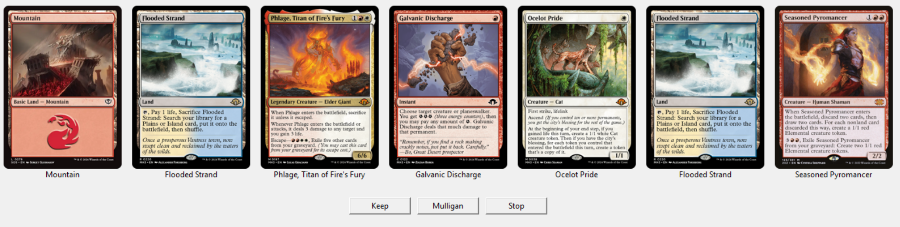
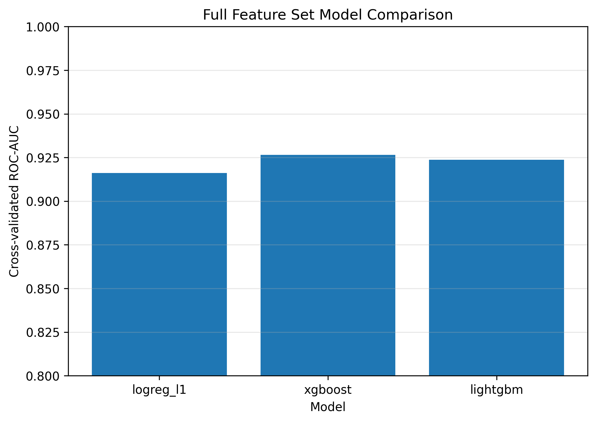
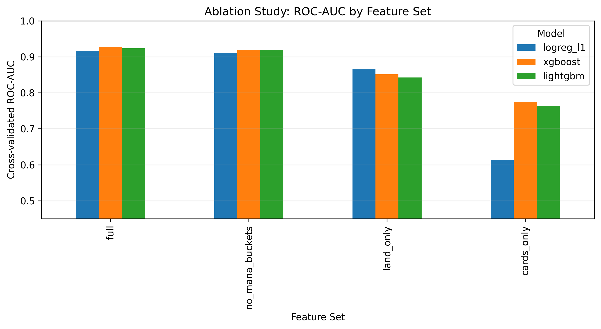
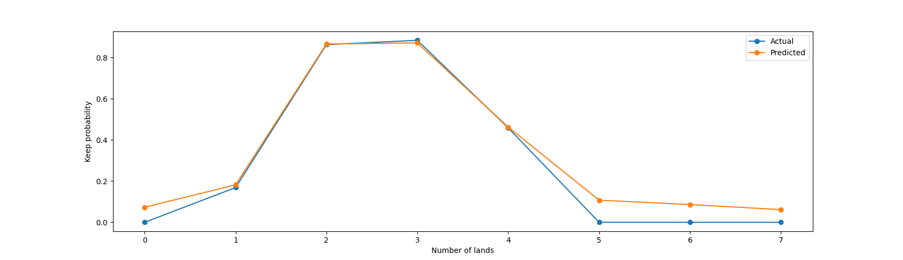

A data-driven analysis of one of the most important early-game decisions
This blog is a simplified presentation of a full research paper.
Mulligan decisions in Magic: The Gathering are high-impact choices made at the very start of the game. Players must evaluate whether an opening hand is playable with only partial information about future draws.
Despite their importance, these decisions are typically guided by informal heuristics rather than formal models. In this project, we instead take a data-driven approach and learn a decision policy directly from player behavior.
P(Keep | S)
Here, S represents the observable state (the opening hand and context). Rather than computing optimal play, we estimate the probability that a player chooses to keep a hand.
Core result: Most of the decision signal is explained by simple, interpretable features especially land count.
At the start of a game, a player is given a hand of seven cards and must decide whether to:
This is a tradeoff between short-term playability and long-term resources.
From a decision-theoretic perspective, the optimal choice compares:
E[Win | Keep, S] vs E[Win | Mulligan, S]
In principle, you would choose the option with the higher expected win probability. However, computing these expectations is intractable due to:
As a result, players rely on heuristics like “2–3 lands is good,” but these rules are informal and hard to analyze.
Instead of solving the full game, we learn a policy directly from observed decisions.
P(Keep | S)
This reframes the problem as a supervised learning task: given a hand, predict whether a player keeps it.
Keep if P(Keep | S) > τ
The threshold τ controls how conservative the decision is. Lower thresholds favor keeping more hands, while higher thresholds are more selective.
The model is trained using log loss, which measures how well predicted probabilities match actual decisions.
Unlike accuracy, log loss penalizes overconfident mistakes, making it ideal for learning calibrated decision policies.
There is no public dataset of mulligan decisions, so we built a custom data collection tool.

The tool presents players with randomly sampled opening hands and records their decisions.
This converts human intuition into labeled data while preserving the information available at decision time.
Key idea: instead of simulating optimal play, we learn from real player behavior.
A central challenge is representing a hand of cards in a structured way.
These features map a combinatorial object (a hand) into a learnable vector.
Decision ≈ f(mana consistency) + g(card composition)
This reflects a key modeling assumption: mana availability provides the dominant signal, while card details refine the decision.

All models achieve strong performance (ROC-AUC > 0.90), indicating that mulligan decisions are highly predictable.
Interestingly, logistic regression performs nearly as well as more complex models like XGBoost and LightGBM.
This suggests that most of the predictive structure is captured by the features—not the model complexity.

To understand which features matter, we remove groups of features and measure performance.
Land-based features capture the majority of the decision signal.
Card-level features are only useful when a reasonable mana baseline is present.

The model learns a nonlinear relationship between land count and decision outcome.
This matches intuitive gameplay heuristics, but the model quantifies the effect precisely.
The results suggest that players follow a structured decision process:
π(S) = π_land(S) + δ_card(S)
The land-based component explains most of the decision, while card-level effects provide smaller adjustments.
The demo shows the model evaluating real hands and outputting a probability of keeping.
This allows players to compare their intuition against a data-driven estimate, and understand how different features influence the decision.
Despite the complexity of Magic, mulligan decisions are governed by a simple structure: they are primarily driven by mana consistency.
This suggests that even complex strategic decisions can often be approximated using compact, interpretable models.